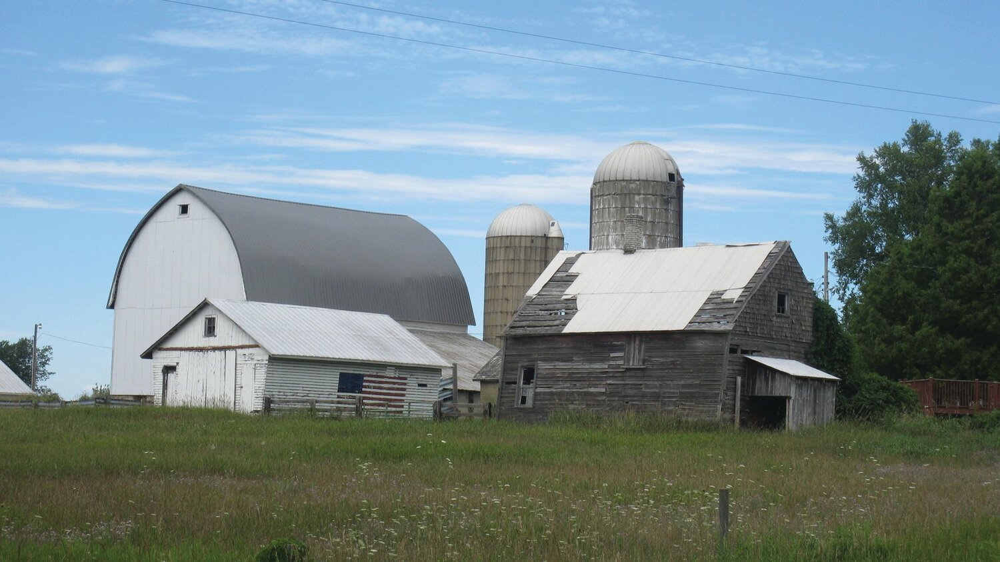

Our Story
Our farm has a rich and storied history that dates back to the early 1900s. It was founded by our great-grandparents, who immigrated from Europe with dreams of creating a sustainable and prosperous farm. They started with just a few acres of land and a handful of livestock, but through hard work and determination, they were able to grow their farm into the thriving operation it is today.
Over the years, our farm has weathered many storms - both literal and figurative. But through it all, we've remained committed to our mission of providing high-quality, sustainably-raised products to our community. We're proud to carry on the legacy of our ancestors and continue their tradition of farming with integrity and respect for the land.
Today, our farm is home to a diverse array of livestock and crops. We're constantly exploring innovative farming practices to improve our sustainability and reduce our environmental impact. We're also deeply involved in our local community, hosting farm-to-table dinners and educational events to share our love of farming with others.
We're grateful for the journey that's brought us to where we are today, and we're excited for what the future holds. We hope you'll join us as we continue to grow and evolve, always staying true to our roots and our commitment